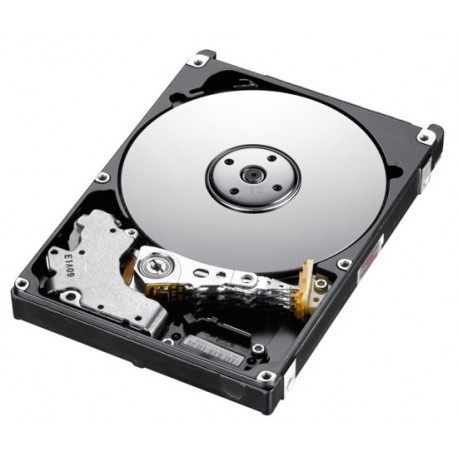
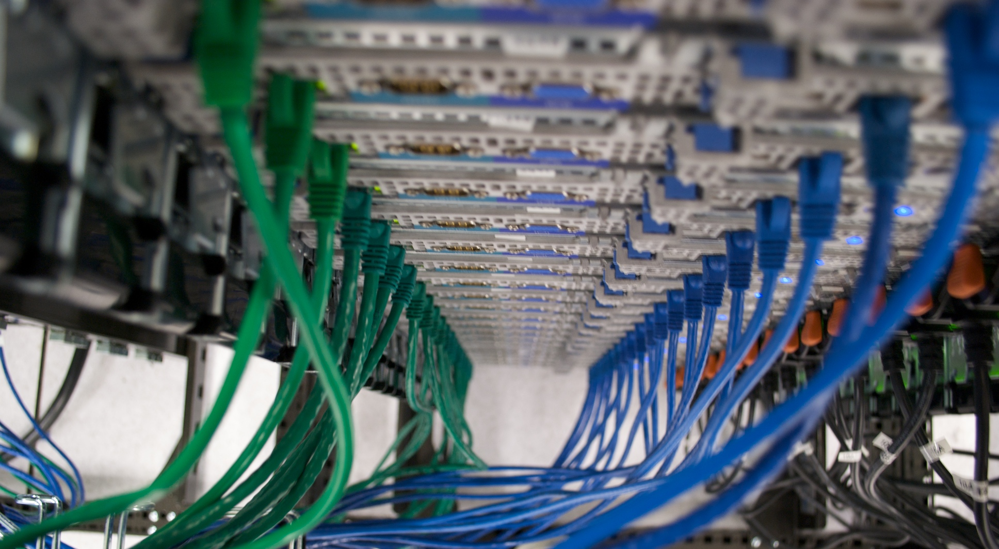
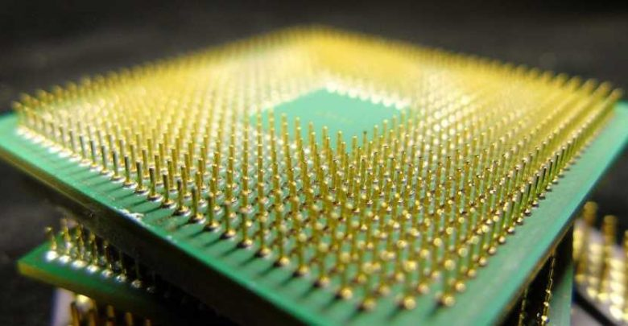
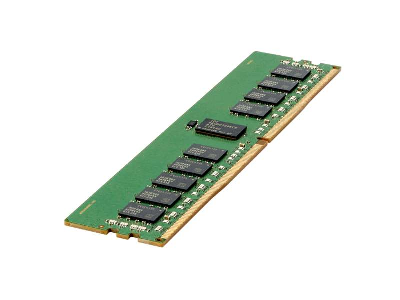
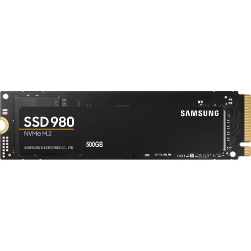
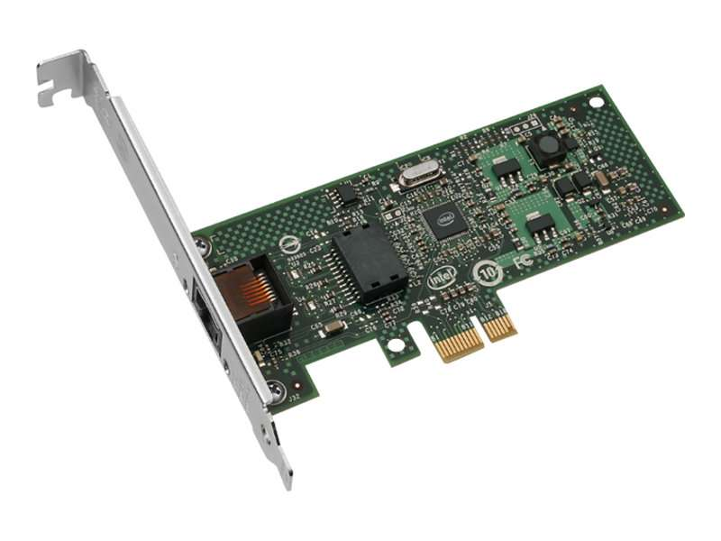
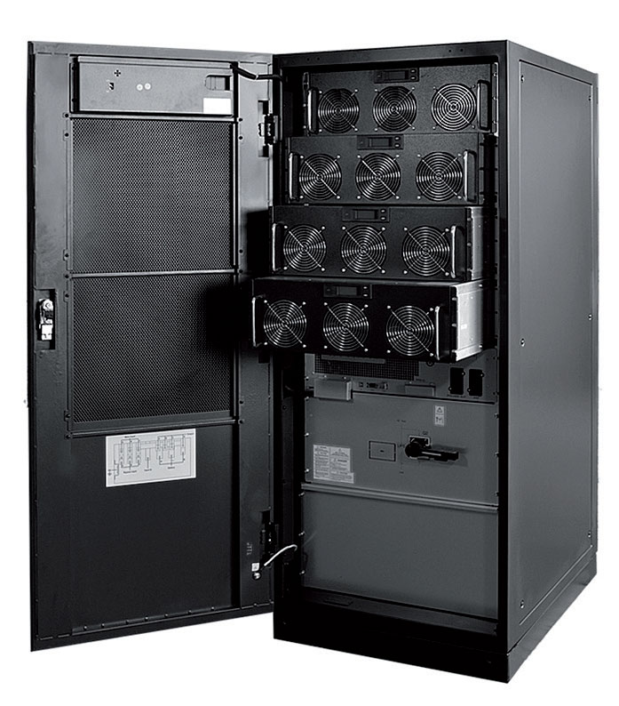

Sprzęt dla bazy danych¶

Sprzęt dla bazy danych to elementarne narzędzie dla każdej firmy, która potrzebuje skutecznie zarządzać swoimi danymi. Bazy danych są niezbędne dla wielu dziedzin, takich jak finanse, medycyna, transport, logistyka czy e-commerce. W zależności od wielkości bazy danych, ilości użytkowników i wymagań co do wydajności, konieczne jest odpowiednie dobranie sprzętu.
Podstawowymi elementami sprzętu dla bazy danych są serwery oraz dyski twarde:
Serwery¶
Serwery to komputery specjalnie zaprojektowane do pracy w sieci, umożliwiające przechowywanie i przetwarzanie dużej ilości danych. Serwery dla baz danych muszą być wydajne i niezawodne, a ich ilość zależy od potrzeb firmy. W zależności od ilości danych, którą trzeba przechowywać, serwer może mieć różną pojemność dyskową. W przypadku bardzo dużych baz danych, gdzie potrzebna jest wysoka wydajność, stosuje się z reguły rozwiązania typu klasteryzacja.
Dyski Twarde¶
Kolejnym istotnym elementem są dyski twarde, które przechowują dane. W przypadku dużej bazy danych, ilość dysków może być znaczna, a ich pojemność może wynosić od kilku gigabajtów do kilku terabajtów. Dyski muszą być również wydajne i niezawodne, co jest szczególnie istotne w przypadku systemów działających w trybie ciągłym.
Sieci Przesyłowe¶
Oprócz serwerów i dysków, istotnym elementem infrastruktury dla bazy danych są także sieci przesyłowe. Bez odpowiednio szybkiej i niezawodnej sieci praca z bazą danych może być utrudniona lub wręcz niemożliwa. W zależności od wielkości i potrzeb firmy, mogą być stosowane różne technologie sieciowe, np. Ethernet, FDDI, ATM czy ISDN.
Procesory¶
Wysokiej jakości procesory są kluczowe dla wydajności bazy danych. Dla dużych baz danych wymagających szybkiego przetwarzania danych, stosuje się procesory wielordzeniowe. Ważne jest również, aby procesor obsługiwał technologię wirtualizacji, co umożliwia lepsze wykorzystanie mocy obliczeniowej.
Pamięć RAM¶
Duża ilość pamięci RAM jest niezbędna do szybkiego przetwarzania danych. Im większa baza danych, tym większa ilość pamięci jest potrzebna. W przypadku dużych baz danych, ilość pamięci RAM może sięgać kilku gigabajtów lub nawet terabajtów.
Dyski SSD¶
W przypadku dużych baz danych, często stosuje się dyski SSD (Solid State Drive), ponieważ są one szybsze i bardziej niezawodne niż tradycyjne dyski twarde. Dyski SSD mają również krótszy czas dostępu do danych, co przyspiesza operacje odczytu i zapisu danych.
Karty sieciowe¶
W przypadku serwerów baz danych stosuje się specjalne karty sieciowe, które umożliwiają szybki transfer danych. Stosuje się tu zwykle karty sieciowe z interfejsem 10GbE lub 40GbE.
Zasilacze awaryjne¶
W przypadku bazy danych ważne jest, aby zapewnić ciągłość zasilania. Dlatego stosuje się zwykle zasilacze awaryjne, które w przypadku awarii prądu umożliwiają bezpieczne zamknięcie bazy danych i uniknięcie utraty danych.
Systemy RAID¶

W celu zabezpieczenia danych przed utratą stosuje się zwykle systemy RAID. RAID (Redundant Array of Independent Disks) to technologia, która umożliwia zapis danych na kilku dyskach jednocześnie, co zwiększa niezawodność i bezpieczeństwo danych.
Podsumowanie¶
Ostatecznie, wybór sprzętu dla bazy danych zależy od wielu czynników, w tym od wielkości bazy danych, ilości użytkowników oraz wymagań co do wydajności. Firmy powinny dokładnie określić swoje potrzeby i zasięgnąć porady specjalistów, aby wybrać optymalne rozwiązania sprzętowe.